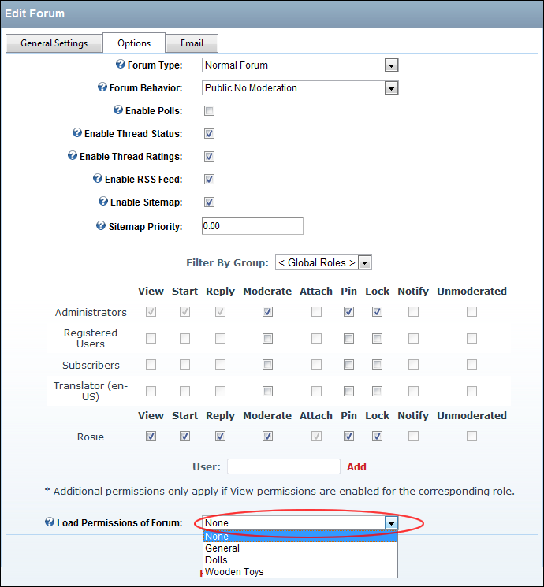

Loading Existing Forum Permissions
How to load permissions from an existing forum to another forum using the Forum module. These permissions can then be edited if required.
- Complete Steps 1-4 of See "Editing a Forum" This will take you to the Edit Forum page.
- Select the Options tab.
- At Load Permissions of Forum, select the forum you wish to load permissions from. This displays the permissions of the selected forum in the permissions grid above. If these permissions match the permissions you want for this forum, then skip to Step 7. Alternatively, complete the remaining steps to customize these permissions for this forum.
- Optional. In the User text box, enter the username of a user that you want to grant or deny module permissions for, and then click the
 Add link. Repeat for additional usernames.
Add link. Repeat for additional usernames.
- Optional. At Filter By Group, select from the following options:
- < All Roles >: Select to view all roles (both global and group roles) in one single list.
- < Global Roles >: Select to view all roles which are not associated with a Role Group. This includes Administrators, All Users, Registered Users, and Unauthenticated Users.
- [Role Name]: Select the name of a Role Group to view the roles within that group.
- For each permission type (listed below), beside each role to grant that permission - OR - to deny that permission. Note: Some options may be disabled depending Forum Type of this forum.
- View: Select all roles that can view this forum.
- Start: Select all roles that can begin a new thread in this forum.
- Reply: Select all roles that can reply to a post in this forum.
- Moderate: Select all roles that can moderate on this forum. Administrators are enabled by default.
- Attach: Select all roles that can add an attachment to their posts for this forum. Administrators are enabled by default.
- Pin: Select all roles that can pin a thread on this forum. Pinned threads will appear at above other threads. Administrators are enabled by default.
- Lock: Select all roles that can lock a thread on this forum. Replies cannot be made to locked threads.
- Notify: Select all roles that to receive moderator notification from this forum.
- Unmoderated: Select all roles that do not require moderation.
-

Loading Existing Forum Permissions